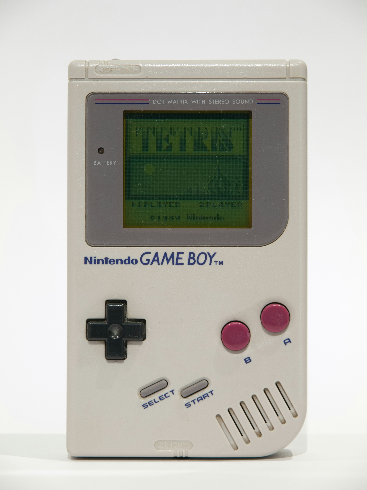
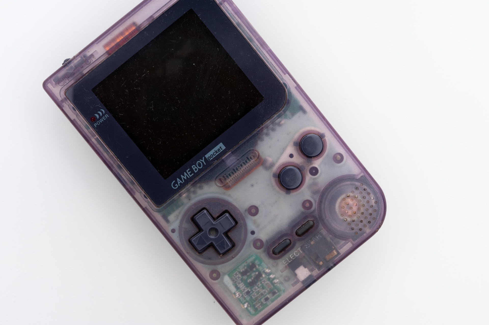
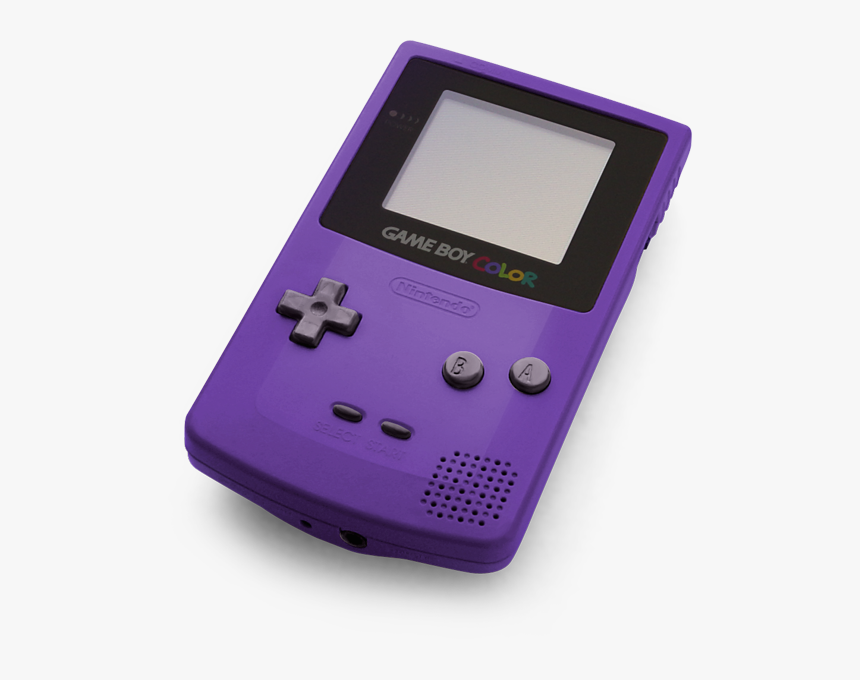
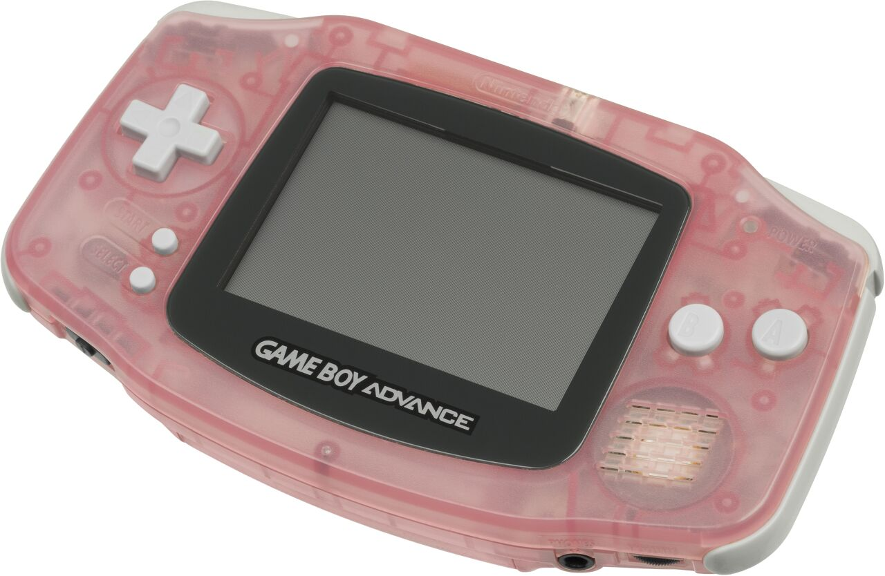
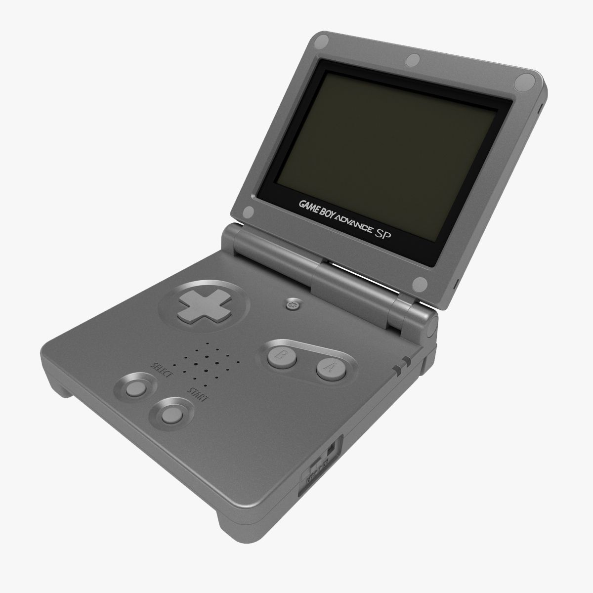
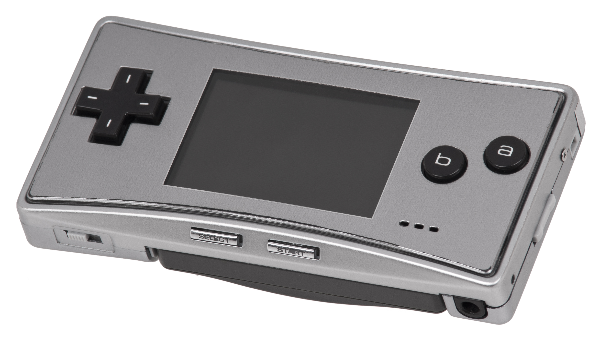

Original Game Boy
The classic gray brick that started it all.
Explore our database of Game Boy variants, including rare editions and special releases.

The classic gray brick that started it all.

Smaller, lighter, and clearer screen.

The first Game Boy with a color screen.

32-bit power in a compact horizontal design.

Clamshell design with a front-lit (later backlit) screen.

Tiny form factor with a sharp, bright display.